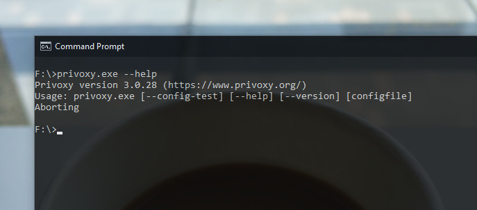

Privoxy 是具有高级过滤功能的非缓存 Web 代理（同类软件里分缓存和非缓存两种），可增强隐私性。Privoxy 常常作为一个辅助的流量转发模块，工作于操作系统代理接口和 SOCKS5 代理服务接口之间，将本地 HTTP 流量转发到本地或远端 SOCKS5 服务器，从而让 Web 应用可以直接使用 SOCKS5 代理且不需要任何设置，被广泛应用在各种连接国际网络的工具里。

Privoxy.exe
官方的源码是基于 GNU Make 开发环境，上图则是 Porting 到 Windows Visual Studio 开发环境的版本，程序被配置为 Windows 控制台应用程序，添加了 Windows 系统里没有实现的 Linux 函数，源码在这里 privoxy-windows。
当然，也可以将程序配置为 dll 以方便主程序调用。不过这个程序不会很频繁的被调用，他只处理网络流量和其他程序的代码几乎不会有数据交互，配置为独立进程我觉得更适用。控制台程序可以很容易的隐藏窗口在“后台”运行，下面是一个 C# 启动和关闭 Privoxy 进程的例子。
// startup
try
{
process_privoxy = Process.Start(
new ProcessStartInfo
{
FileName = PRIVOXY_EXE_PATH,
Arguments = CONFIG_PATH,
WorkingDirectory = PRIVOXY_EXE_DIRECTORY,
UseShellExecute = false,
CreateNoWindow = true,
});
}
catch
{
...
}
// shutdown
try
{
process_privoxy.Kill();
process_privoxy.WaitForExit();
}
catch { }
process_privoxy.Dispose();